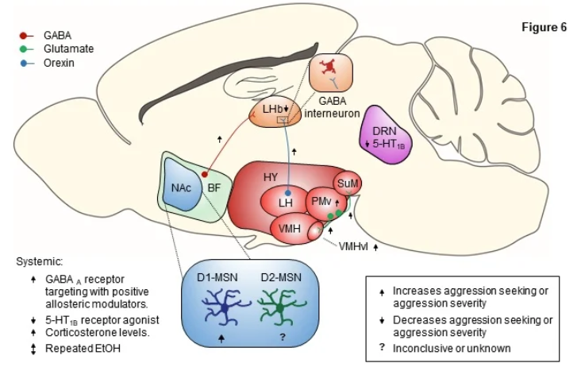
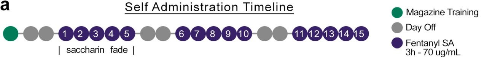
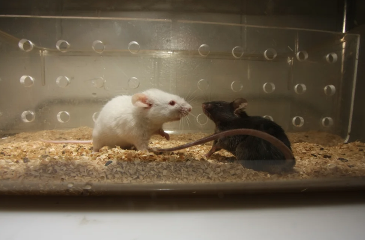
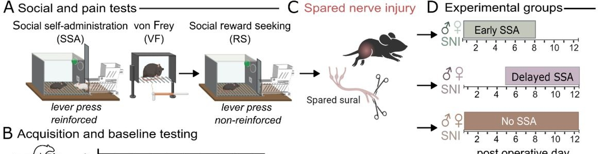
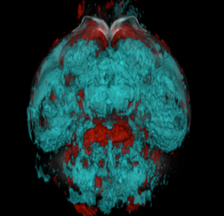
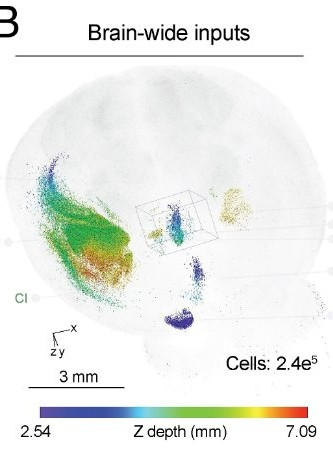

The Golden Lab.
Located at HSB F-524.
University of Washington
Department of Neurobiology and Biophysics
The lab is currently accepting applications for lab manager/research technician positions, as well as undergraduate trainees. We are not accepting postdoctoral or graduate students at this time.
Please click here for more information.

Aggression
Aggression is often comorbid with neuropsychiatric diseases, including drug addiction and depression. One form, appetitive aggression, exhibits symptomatology that mimics addiction and is hypothesized to arise from dysregulation of reward circuits. We focus on identifying the basic neural mechanisms driving appetitive aggression and its transition to maladaptive, addiction-like aggression seeking.

Addiction
Fentanyl-related overdose deaths increasingly involve non-injection routes, yet preclinical models of opioid self-administration remain predominantly intravenous. We developed an oral fentanyl self-administration procedure in mice that captures volitional intake, cue-driven seeking, extinction, and relapse. This work reveals separable escalation-prone and relapse-prone phenotypes that track genetic background, with sex differences concentrated in classically studied inbred mice. All protocols, hardware specifications, and analysis code are shared openly to lower the barrier to adopting this model.

Depression
In 2024, we introduced an operant social stress procedure that combines voluntary social self-administration with social defeat and witness defeat stress in male and female mice, revealing sex-dependent individual differences in social motivation following stress (Navarrete et al., 2024, Biological Psychiatry). We are now extending this model with brain-wide activity mapping to identify the neural circuits underlying these individual differences in stress resilience and susceptibility.

Pain
Social contact is known to buffer pain, but whether an animal's agency over that contact matters is unclear. Using a social operant self-administration procedure in which mice lever-press for access to their pair-housed partner, we found that voluntary social engagement buffers pain following nerve injury, but only within an early critical window: mice given access to their partner one day after injury showed buffered pain, while access delayed by five days did not, despite similarly preserved social reward-seeking. Passive, non-contingent social contact and food reward did not buffer pain, highlighting agency and timing as key variables in social pain buffering.

Anesthesia and Consciousness
In close collaboration with the Heshmati Lab at the University of Washington, under the direction of Dr. Mitra Heshmati, we investigate the brain-wide neural circuits governing loss and recovery of consciousness under general anesthesia. Across a series of collaborative preprints, we have used whole-brain activity mapping and brain-wide chemogenetic circuit capture in mice to identify discrete subcortical hotspots recruited during isoflurane-induced unconsciousness, engineered a synthetic anesthesia-like state by reactivating these captured circuits in the absence of any anesthetic drug, and shown that emergence from anesthesia reflects selective subcortical recruitment rather than a broad return to wakeful brain activity. Together, this partnership is building a brain-wide, circuit-level framework for conscious state transitions, with relevance to both basic neuroscience and clinical anesthesiology.

Methods Development
The lab builds and shares open-source tools for behavioral neuroscience, including SimBA (Simple Behavioral Analysis), a machine-learning platform for classifying complex social behaviors, and ArgiNLS, a nuclear-localization strategy for scalable single-cell image segmentation. We are also developing wireless, implantable devices (BMADs) for monitoring physiology and behavior in freely-moving, group-housed animals.